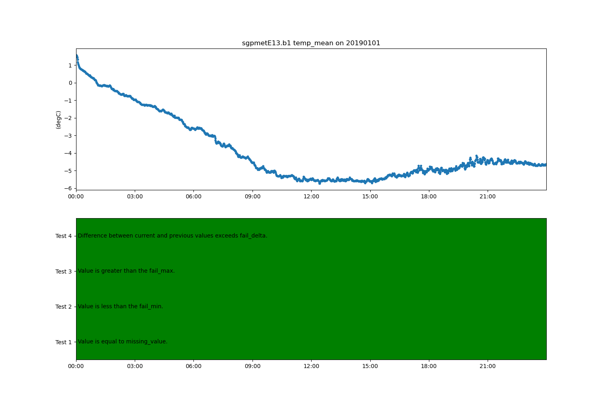

Note
Click here to download the full example code
Example on how to query the ARM DQR webservice¶
Simple example for querying the ARM DQR webservice and plotting up the results
Author: Adam Theisen
import act
from matplotlib import pyplot as plt
# Read in sample AOSMET data
files = act.tests.sample_files.EXAMPLE_AOSMET
obj = act.io.armfiles.read_netcdf(files)
# Query DQR webservice for a specific variable
variable = 'temperature_ambient'
obj = act.qc.arm.add_dqr_to_qc(obj, variable=variable)
# Plot data
# Creat Plot Display
display = act.plotting.TimeSeriesDisplay(obj, figsize=(15, 10), subplot_shape=(2,))
# Plot temperature data in top plot
display.plot(variable, subplot_index=(0,))
# Plot QC data
display.qc_flag_block_plot(variable, subplot_index=(1,))
plt.show()
Total running time of the script: ( 0 minutes 0.520 seconds)